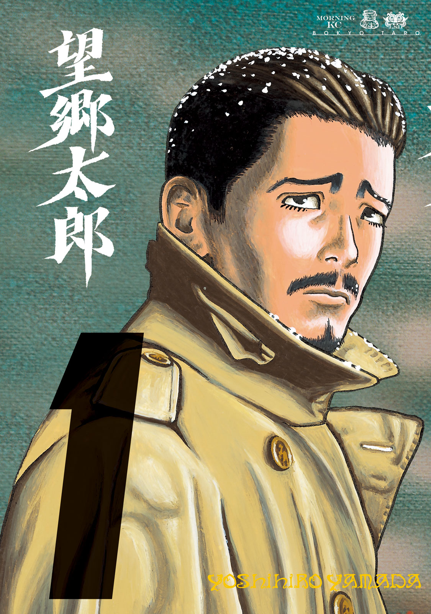
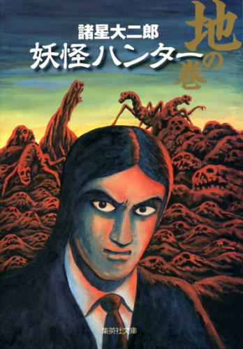
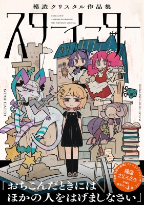

| タイトル | イメージ | 作者 | 一口メモ |
|---|---|---|---|
| 望郷太郎 |  | 山田芳裕 | 「へうげもの」の作者の新作。結局、世の中お金のやつなのか。 |
| 妖怪ハンター |  | 諸星大二郎 | 巨匠、諸星先生の代表作。超スペクタクル・怪奇サスペンス。控えめに言って、最&高 |
| スターイーター |  | 模造クリスタル | 知ってる人は知っている、模造クリスタル先生の短編集。ふしぎで、ちょっぴりせつない作風が魅力的。 |
くすぐられたい子羊。会社員時代、精神を保つためによく見てた。
一度聞いたら、耳から離れない。ぽーぽぽぽー、ぽーぽぽぽー。
↑ふたつの動画がさっぱり再生できなかったので、てきとーあげ